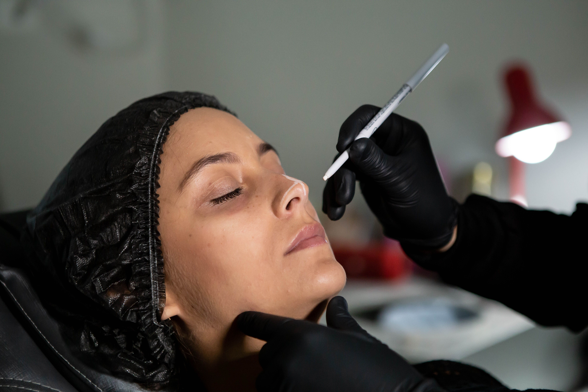
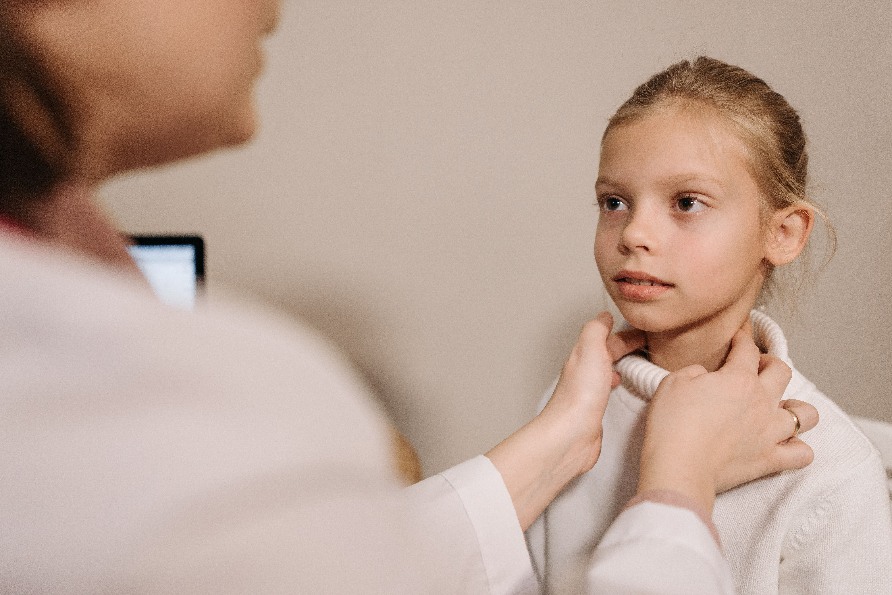

Nuestras especialidades y servicios

Nariz
Diagnóstico y tratamiento de enfermedades de la nariz y senos paranasales, incluyendo causas alérgicas, infecciosas e inflamatorias.

Oido
Evaluación y tratamiento de patologías como infecciones, hipoacusia y acúfenos (zumbidos), mejorando la calidad de vida del paciente.

Laringe
Diagnóstico y tratamiento de trastornos de la voz y la deglución, como disfonía, ronquera y alteraciones vocales.

Otoneurología
Diagnóstico y tratamiento de mareos, vértigo y trastornos del equilibrio que afectan el sistema vestibular.

Audiología
Estudios de la audición y evaluación del sistema auditivo mediante audiometrías y pruebas especializadas.

Rinoplastía
Cirugía funcional y estética de la nariz, orientada a mejorar la respiración y/o la armonía facial.

Pediatría
Atención otorrinolaringológica especializada en niños, incluyendo infecciones frecuentes, adenoides y problemas de audición.

Audífonos
Atención otorrinolaringológica especializada en niños, incluyendo infecciones frecuentes, adenoides y problemas de audición.
Audiología
Estudios de la audición y evaluación del sistema auditivo mediante audiometrías y pruebas especializadas.
Rinoplastía
Cirugía funcional y estética de la nariz, orientada a mejorar la respiración y/o la armonía facial.
Pediatría
Atención otorrinolaringológica especializada en niños, incluyendo infecciones frecuentes, adenoides y problemas de audición.
Audífonos
Atención otorrinolaringológica especializada en niños, incluyendo infecciones frecuentes, adenoides y problemas de audición.